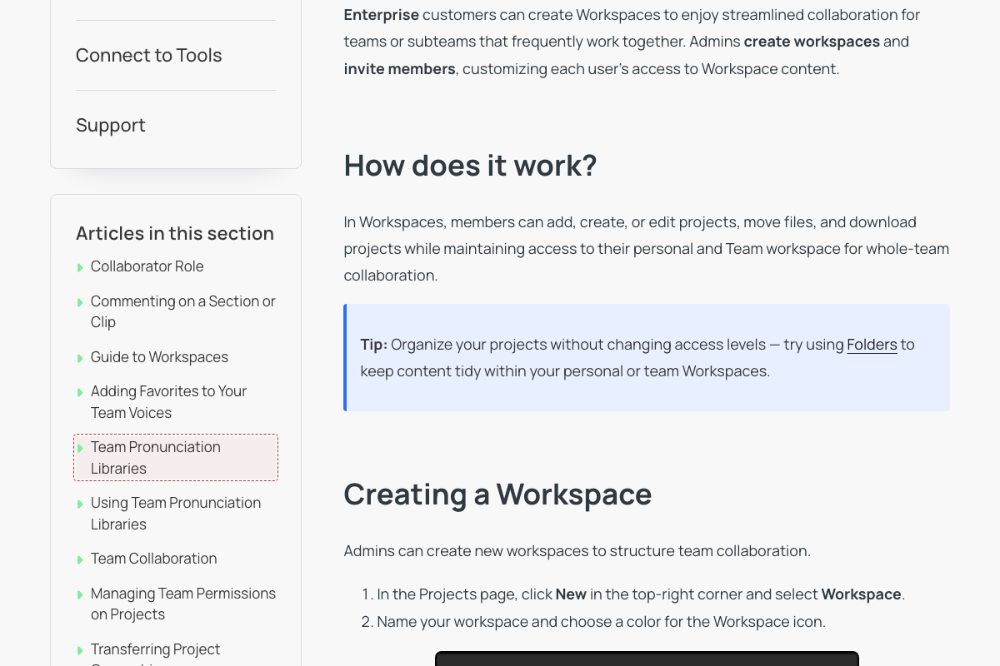

Prepared for WellSaid Labs
Prepared for WellSaid LabsDR-0038CriticalTextNewCollaboration and Permissions
Article title 'Team Pronunciation Libraries' does not match body content (entirely about Workspaces)
Team Pronunciation Libraries · help.wellsaid.io/…/39343240569747-Team-Pronunciation-Libraries

Current
Team Pronunciation Libraries
Suggested fix
Title should be 'Workspaces' (or similar) — the body covers creating Workspaces, inviting members, access levels, editing/deleting Workspaces, and Workspace FAQs, with zero pronunciation/Replacement-library content.
What changed
Article body has no mention of pronunciation, respellings, or Replacement Library; every section ('What are Workspaces?', 'Creating a Workspace', 'Adding Team Members to a Workspace', 'Editing or Deleting a Workspace', and all FAQs) is Workspaces content.